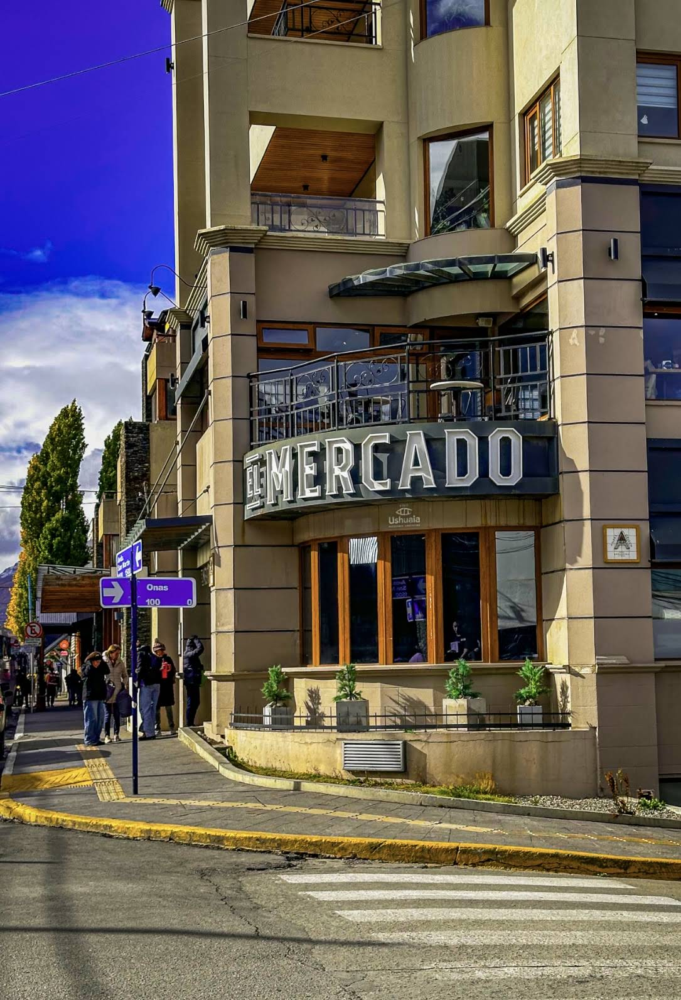
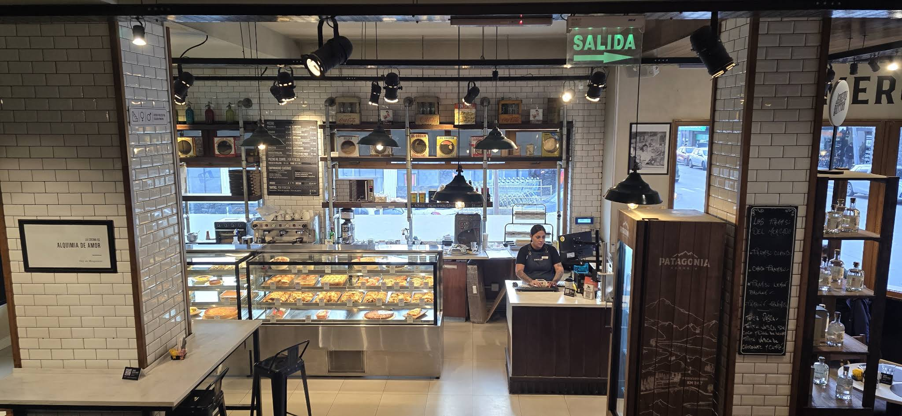
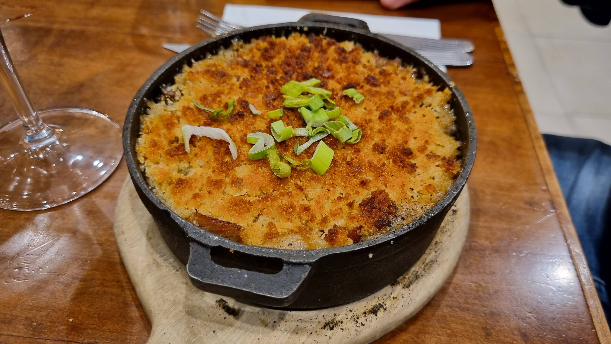
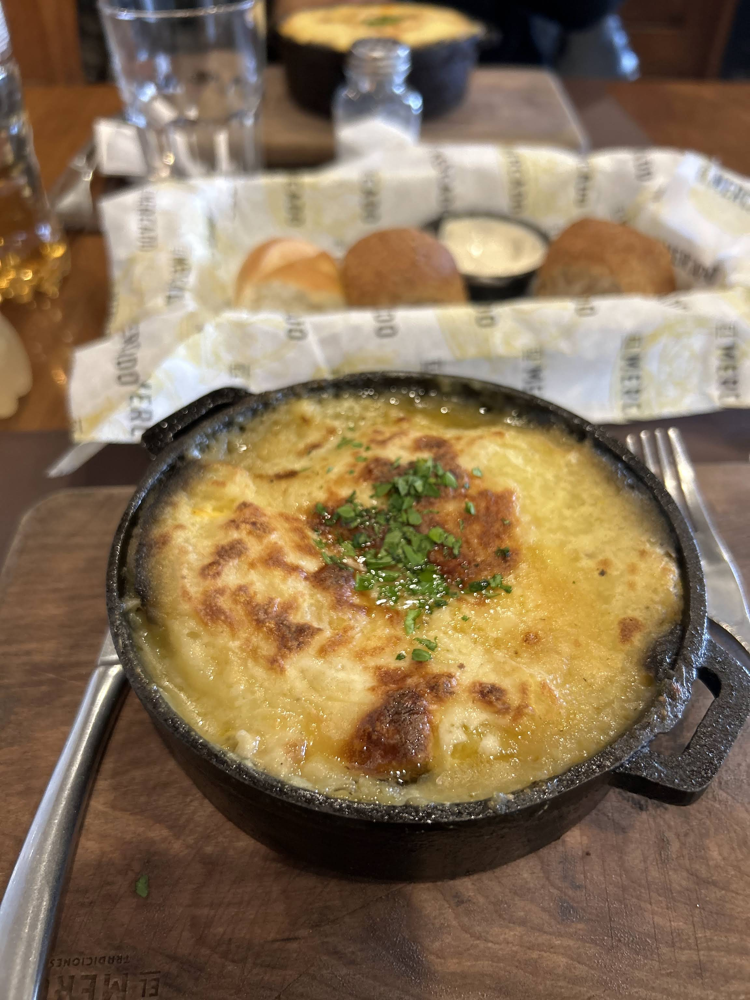
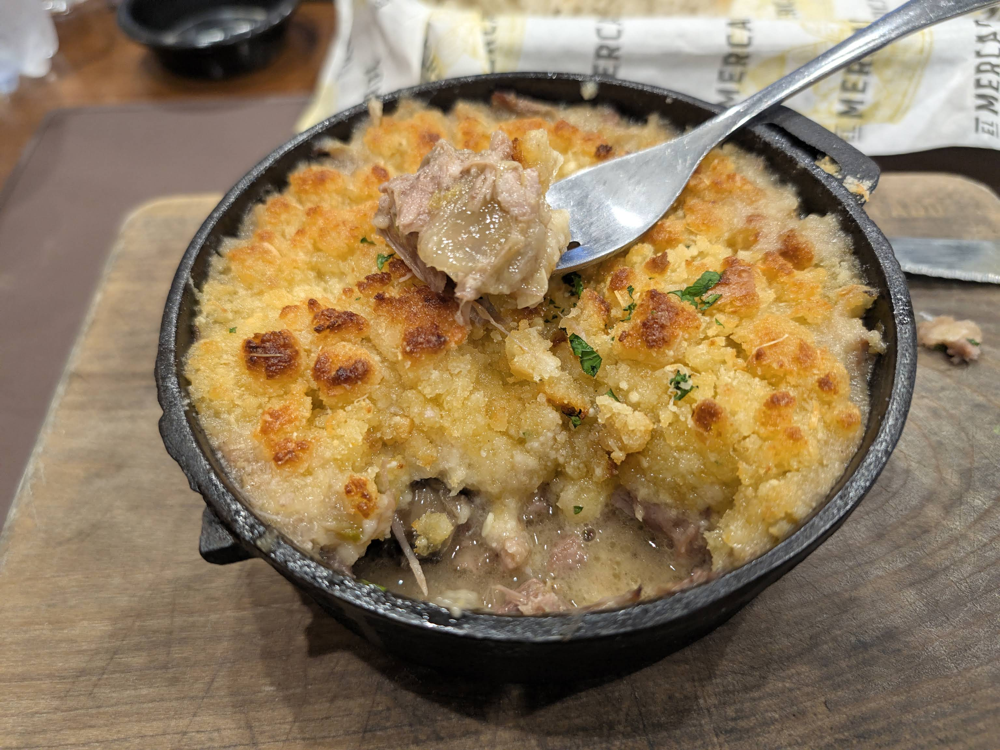

RESTAURANTE · USHUAIA
Sabores del
fin del mundo.
Cocina patagónica, encuentros largos y una carta para compartir en el corazón de Ushuaia.
AV. SAN MARTÍN 1488 · USHUAIA54°48′ S — 68°18′ O
EL
MERCADO
USHUAIA
MERCADO
USHUAIA
SABORES TRADICIONALES DE LA PATAGONIA
01 / NUESTRA CASA
Un lugar para
quedarse un rato.
Una mesa cálida en San Martín, con clásicos para compartir y sabores que llevan el sur a cada plato.
Encontrá pastas, pizzas, platos de horno, opciones sin TACC y mucho más. Elegí tus favoritos y envianos el pedido directo por WhatsApp.
Estamos en el centro de Ushuaia ↗03 / GALERÍA DEL LOCAL
El Mercado,
en imágenes.
Cinco fotos reales de la ficha de Google Maps: la fachada, el salón y algunos sabores de la casa.





04 / RESERVAS
TU MESA TE ESPERA
Hagamos lugar
para vos.
Completá los datos y abriremos WhatsApp con tu solicitud lista para enviar.
01 Elegís día y horario.
02 Revisás el mensaje.
03 Confirmamos por WhatsApp.
02 Revisás el mensaje.
03 Confirmamos por WhatsApp.
05 / ENCONTRANOS
En el centro,
cerca de todo.
Av. San Martín 1488
V9410BGO Ushuaia, Tierra del Fuego
Horario informado: abierto, cierra a las 23:00.
Consultá disponibilidad y horarios por WhatsApp.